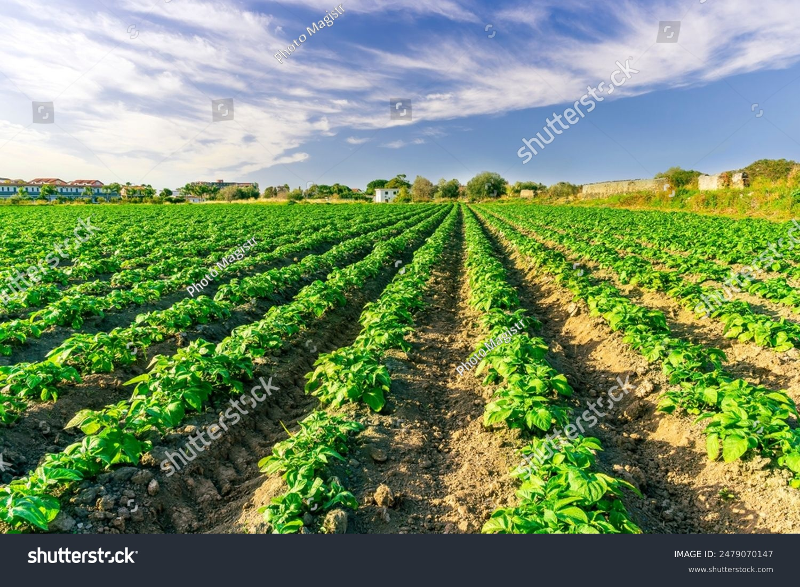

Potato: The Versatile Tuber

Uses of Potato
Potatoes are one of the most widely used crops worldwide:
- Food Industry: Used in countless dishes, snacks, and as a staple ingredient globally.
- Industrial: Used in producing starch and even biofuel.
- Animal Feed: Potatoes can also be used as animal feed in some regions.
Types of Potato
Various types of potatoes are grown for different purposes:
- Russet Potato: Known for its starchy texture, perfect for baking and mashing.
- Red Potato: Less starchy, good for salads and roasting.
- Yellow Potato: Creamy and buttery, excellent for mashing and roasting.
- Fingerling Potato: Small, uniquely shaped potatoes with a waxy texture.
Growth Requirements for Potato
Potatoes thrive under the following conditions:
- Climate: Cool climates are ideal, with temperatures around 15-20°C during the growing season.
- Soil: Loamy, well-drained soil with a slightly acidic pH of 5.5-6.5.
- Water: Potatoes require consistent moisture but avoid waterlogging.
Natural Fertilizers for Potato
Organic fertilizers are beneficial for healthy potato growth:
- Compost: Enriches soil with organic matter and nutrients.
- Bone Meal: High in phosphorus, essential for root development and tuber growth.
- Manure: Provides balanced nutrients for overall growth.
Pest and Disease Prevention
Common pests and diseases in potatoes can be managed by:
- Potato Blight: Prevented by crop rotation and using disease-resistant varieties.
- Colorado Potato Beetle: Managed through manual removal or natural insecticides.
- Wireworms: Reduced by avoiding excessive moisture and using natural pest deterrents.
Benefits of Potato
- Rich in Carbohydrates: Provides a high energy source, especially in starchy varieties.
- Contains Fiber: Supports digestive health and satiety.
- High in Vitamins and Minerals: Contains potassium, vitamin C, and B vitamins.
Frequently Asked Questions
1. How long does it take for a potato plant to produce tubers?
Potato plants typically take 70-120 days to produce tubers, depending on the variety.
2. Can potatoes be grown in containers?
Yes, potatoes can be grown in containers as long as they have deep soil and adequate sunlight.
Back to Crop List